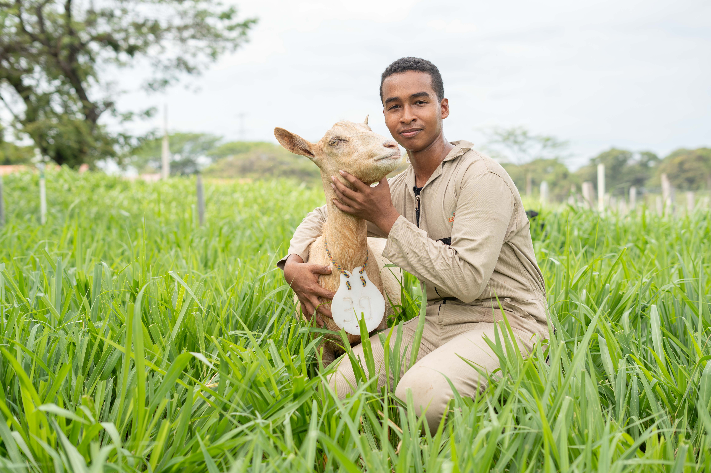

Agrícola - Sostenibilidad Alimentaria y Biocomercio
- Especies nativas.
- Cultivos industriales.
- Riego automatizado.
- Sanidad vegetal.
- Cultivos orgánicos.
- Biotecnología agrícola.
- Buenas prácticas agrícolas (BPA).
Bioeconomía
- Agricultura de precisión, la agroecología y la mejora genética
de cultivos producción eficiente y sostenible de alimentos.
- Gestión sostenible de los recursos forestales y la utilización de
la madera, materiales de construcción, productos químicos
renovables y bioplásticos.
- Economía circular, transformación de residuos en productos de valor,
como compost, biogás y productos químicos renovables.
- Conservación de la biodiversidad en las actividades económicas y promover
la valoración de los servicios ecosistémicos.
Ambiental: Medio ambiente y desarrollo sostenible
- Evaluación del impacto ambiental.
- Recursos naturales.
- Tecnologías limpias.
- Residuos y saneamiento ambiental.
Pecuario - Ciencias y Tecnología para el Desarrollo
Agropecuario Sostenible
- Pecuario - Ciencias y Tecnología para el Desarrollo Agropecuario Sostenible Ganadería
regenerativa: sistemas silvopastoriles, ganadería sostenible, pastoreo inteligente.
- Nutrición Animal: alternativas de suplementación animal, alimentos balanceados,
pastos y forrajes, métodos de conservación de forrajes.
- Reproducción Animal: mejoramiento genético y biotecnología reproductiva.
- Buenas prácticas ganaderas: BPO, bienestar animal, instalaciones, trazabilidad,
y bioseguridad.

Todos los derechos reservados. Centro Agroempresarial y Acuícola - SENA Regional Guajira | By ADSO.